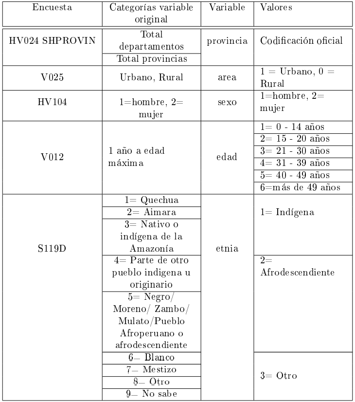
Estimación de uso de métodos de planificación familiar empleando modelos de unidad
CEPAL - División de Estadísticas Sociales
Introducción
Para los gobiernos y las organizaciones internacionales es muy importante conocer las condiciones de calidad de vida de las personas en lo que incluye la salud, por lo cual, evaluar la capacidad que estas tienen para cubrir sus necesidades de planificación familiar y de acceso a diferentes métodos modernos de planificicación; es fundamental para el diseño y formulación de políticas públicas. Por esta razón, el realizar mapas de uso de métodos de planificación familiar mediante metodologías adecuadas que permitan llegar a estimaciones precisas, se convierte en una herramienta preciada para identificar no solamente las áreas geográficas más vulnerables en términos salud sexual y reproductiva (departamentos, regiones, municipios, provincias, comunas o la división geográfica característica de cada país) sino también la situación de grupos o segmentos poblacionales de interés.
La Encuesta Demográfica y de Salud Familiar (ENDES 2020) es una de las investigaciones estadísticas más importantes que se realizan en Perú por cuenta del INEI, la cual se ejecuta de manera anual. Este insumo, permite la estimación a nivel nacional, departamental y por zona (urbano/rural) de múltiples indicadores demográficos en el país, relacionados con diversos aspectos de la salud, principalmente en mujeres y niños, como lactancia, mortalidad infantil, fertilidad y uso de métodos anticonceptivos, entre otros temas relevantes de salud pública.
Esta encuesta según el INEI, fue aplicada durante los meses de enero a diciembre del 2020. El número de viviendas seleccionadas fue 37.390 de las cuales 35.847 fueron entrevistadas. En las viviendas entrevistadas, fueron encontradas un total de 37.895 mujeres elegibles de 12 a 49 años de edad, de las cuales se obtuvo un total de 35.430 entrevistas completas. La muestra seleccionada representa la totalidad de la población del país. Es importante señalar, que para algunos de los indicadores, fueron incluidas mujeres de 12 a 49 años, el estudio se basa principalmente en mujeres entre los 15 y 49 años de edad.
Definiciones de los indicadores de interés.
Indicador D6 métodos de planificación
Este indicador, alude a la tasa de prevalencia de uso de métodos anticonceptivos de mujeres sin importar el tipo de método ya sea moderno, tradicional o folclórico, la cual se compone por mujeres en edad fértil (entre 15 y 49 años) y sexualmente activas
Indicador D6m métodos modernos de planificación
Este indicador, corresponde a la tasa de prevalencia que hace referencia al uso de métodos anticonceptivos de tipo moderno. la cual se compone por mujeres por mujeres en edad fértil (entre 15 y 49 años), sexualmente activas que hacen uso de algún método de tipo moderno.
Indicador NI necesidades insatisfechas
La definición de este indicador, se entiende como la tasa de prevalencia de mujeres en edad de procrear que por algún motivo no son capaces de cubrir sus necesidades de planificación familiar con algún método anticonceptivo (moderno o tradicional). Esta se compone, por mujeres en edad fértil (entre 15 a 49 años), sexualmente activas y/o unidas que afirma no ser capaces de cubrir sus necesidades de planificación familiar con algún método anticonceptivo (tradicional y/o modernos)
D7 (junto con necesidades insatisfechas)
Este indicador, hace referencia a la proporción de mujeres en edad de procrear (15 a 49 años), sexualmente activas y/o unidas que han decidido por voluntad propia no tener hijos (adicionales) o posponer su siguiente hijo y para ello se encuentran utilizando métodos anticonceptivos modernos.
Modelo MRP
De acuerdo con este modelo, como lo expone Gutiérrez y otros (2022), la probabilidad de hacer uso de métodos de planificación para la \(i\)-ésima persona en el \(j\)-ésimo post-estrato, puede ser definido para cada unidad de la encuesta. El modelo pretende establecer la relación entre la expectativa \(\rho_{di}\) de la variable dicotómica con las covariables de información auxiliar disponibles para ser incluidas. El procedimiento correspondiente a este proceso, modela el logaritmo del cociente entre la probabilidad de usar algún método anticonceptivo a su complemento en relación al conjunto de covariables a nivel de unidad, \(x_{ji}\), y el conjunto de covariables a nivel departamental, \(Z_d\)
\[ \ln(\frac{ρ_{ji}}{1-ρ_{ji}} ) = x_{ji}^t \beta + z_d \gamma. \]
Los coeficientes \(\beta\) hacen referencia a los efectos aleatorios de las variables \(x_{ji}^t\) sobre las probabilidades de que la \(i\)-ésima persona haga uso de métodos anticonceptivos; por otro lado, los coeficientes \(\gamma\) expresan los efectos fijos sobre las covariables a nivel departamental, \(z_d\). Ahora, es posible asumir distribuciones no informativas para \(\beta\) y \(\gamma\).
\[ \begin{eqnarray*} \beta & \sim & N(0,\sigma^2_1) \\ \gamma & \sim & N(0,\sigma^2_2) \end{eqnarray*} \]
Estandarización de la encuesta
Se presentan las variables provenientes de la Encuesta Demográfica y de Salud Familiar – ENDES, que fueron empleadas para la construcción de los datos que son utilizadas en este estudio e incluidas en el ajuste del modelo.
Covariables
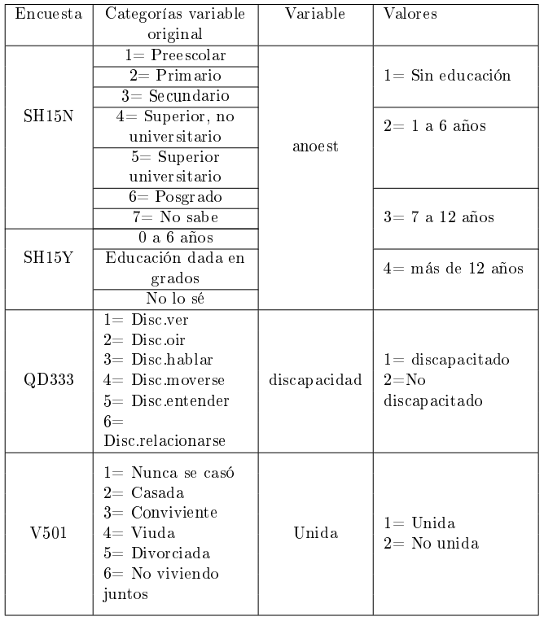
Indicadores
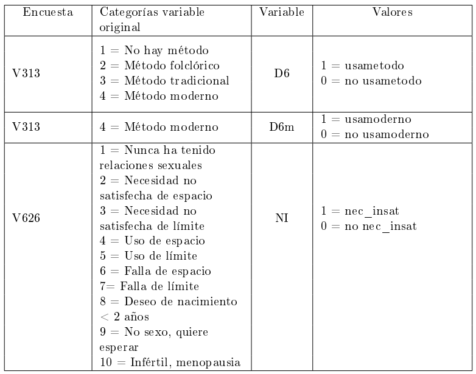
El indicador de necesidades satisfechas de planificación por métodos modernos (D7) no se crea a partir de las variables originales de la encuesta, ya que es una razón entre los otros tres indicadores creados
Variables para el diseño muestral
Unidad primaria de muestreo - UPM
Para la definifición de esta variable, se emplea la variable original de la encuesta “V021”.
Estrato
Para la definifición de esta variable, se emplea la variable original de la encuesta “V022”.
Factor de expansión - fexp
El factor de expansión para el cual se emplea la variable original “V005” el cual requiere que al valor de la variable se le multiplique una constante (7.845.787) la cual hace referencia al número de mujeres en edad fértil; y, a ese valor se divide por la suma de la variable(V005).
La tabla resultante se muestra en la siguiente tabla.
encuesta_mrp <- readRDS("../Data/UNFPA/D6/encuesta_mrp.rds")
tba(encuesta_mrp %>% head(10))| mpio | usametodo | usamoderno | necesInst | area | edad | etnia | anoest | discapacidad | unida | upm | estrato | fexp |
|---|---|---|---|---|---|---|---|---|---|---|---|---|
| 0101 | 1 | 0 | 0 | 1 | 4 | 2 | 4 | 0 | 1 | 1 | 3 | 24.3593 |
| 0101 | 0 | 0 | 0 | 1 | 4 | 3 | 4 | 0 | 2 | 1 | 3 | 24.3593 |
| 0101 | 1 | 1 | 0 | 1 | 4 | 3 | 3 | 0 | 2 | 1 | 3 | 24.3593 |
| 0101 | 1 | 0 | 0 | 1 | 4 | 2 | 4 | 0 | 1 | 1 | 3 | 24.3593 |
| 0101 | 0 | 0 | 0 | 1 | 2 | 3 | 3 | 0 | 2 | 1 | 3 | 24.3593 |
| 0101 | 1 | 1 | 0 | 1 | 4 | 3 | 3 | 0 | 1 | 1 | 3 | 125.7127 |
| 0101 | 1 | 1 | 0 | 1 | 3 | 3 | 4 | 0 | 1 | 1 | 3 | 24.3593 |
| 0101 | 1 | 1 | 0 | 1 | 3 | 3 | 3 | 0 | 1 | 1 | 3 | 125.7127 |
| 0101 | 1 | 0 | 0 | 1 | 4 | 3 | 4 | 0 | 1 | 1 | 3 | 24.3593 |
| 0101 | 1 | 0 | 0 | 1 | 5 | 3 | 4 | 0 | 1 | 2 | 1 | 117.3695 |
Censos de población y vivienda
Es necesario definir las variables del país con los que se desea trabajar. De acuerdo a esto, como primer paso se debe tener acceso al censo del país, para ello puede acceder desde el siguiente enlace https://redatam.org/en/microdata en el cual dispondrá de un archivo .zip con los microdatos del país. Ahora bien, para leer el conjunto de datos, es necesario emplear la función redatam.open de la librería redatam, la cual depende directamente del diccionario censal del software REDATAM, este es un archivo con extensión dicx y que debe encontrarse en la carpeta sobre los datos que se están leyendo. Así, es como se crea un objeto dentro de R que hace la respectiva unión del diccionario con los microdatos de la base de datos censal. La siguiente sintaxis muestra la lectura del diccionario en R y los cálculos iniciales
library(redatam)
peru <- redatam.open( "../Data/UNFPA/1.D6/Data/cpv2017per-cde.dicx")
CONTEOS <- redatam.query(peru, "freq PROVINCI.REDCODEN
by VIVIENDA.VAREA
by PERSONA.C5P041
by PERSONA.C5P02
by PERSONA.EDUCA
by PERSONA.UnidasR
by PERSONA.P09DISC
by PERSONA.PBLOPER", tot.omit = FALSE)
# Eliminando totales de la tabla
CONTEOS2 <- CONTEOS %>% filter_at(vars(matches("_label")),all_vars(. != "__tot__"))Después de realizar algunas validaciones se estandarizan las variables como muestra el siguiente código.
censo_mrp <- CONTEOS2 %>%
transmute(mpio = str_pad(
string = REDCODEN1_value,
width = 4,
pad = "0"
),
area = case_when(VAREA2_value == 1 ~ "1", # 1 = Urbana
TRUE ~ "0"), # 0 = Rural
sexo = as.character(C5P024_value),
edad = case_when(
C5P0413_value %in% 0:14 ~ "1", # 5 a 14
C5P0413_value %in% 15:20 ~ "2", # 15 a 20
C5P0413_value %in% 21:30 ~ "3", # 21 a 30
C5P0413_value %in% 31:39 ~ "4", # 31 a 39
C5P0413_value %in% 40:49 ~ "5", # 40 a 49
TRUE ~ "6"
),
anoest = case_when(
EDUCA5_value == 98 ~ "98", # No aplica
EDUCA5_value == 99 ~ "99", #NS/NR
EDUCA5_value == 1 ~ "1", # Sin educacion
EDUCA5_value == 2 ~ "2", # 1-6
EDUCA5_value == 3 ~ "3", # 7-12
EDUCA5_value == 4 ~ "4" , # 12 o mas
TRUE ~ "Error"
),
etnia = case_when(
PBLOPER8_value == 1 ~ "1", # Indigena
PBLOPER8_value == 2 ~ "2", # Afro
TRUE ~ "3"), # Otro
discapacidad = case_when(
P09DISC7_value == 63 ~ "0", # No discapacitado
TRUE ~ "1"
), # Discapacitado
unida = case_when(
UnidasR6_value == 1 ~ "1",# Unida
TRUE ~ "2" # Otro
),
value) %>%
group_by(mpio, area, sexo, edad, etnia, discapacidad, anoest, unida) %>%
summarise(n = sum(value), .groups = "drop")La tabla resultante se muestra en la siguiente tabla.
censo_mrp <- readRDS("../Data/UNFPA/D6/censo_mrp.rds")
tba(censo_mrp %>% head(10))| mpio | area | sexo | edad | etnia | discapacidad | anoest | unida | n |
|---|---|---|---|---|---|---|---|---|
| 0101 | 0 | 2 | 2 | 1 | 0 | 2 | 1 | 3 |
| 0101 | 0 | 2 | 2 | 1 | 0 | 2 | 2 | 5 |
| 0101 | 0 | 2 | 2 | 1 | 0 | 3 | 1 | 9 |
| 0101 | 0 | 2 | 2 | 1 | 0 | 3 | 2 | 27 |
| 0101 | 0 | 2 | 2 | 1 | 0 | 4 | 2 | 1 |
| 0101 | 0 | 2 | 2 | 1 | 1 | 1 | 2 | 1 |
| 0101 | 0 | 2 | 2 | 1 | 1 | 3 | 2 | 1 |
| 0101 | 0 | 2 | 2 | 2 | 0 | 2 | 1 | 11 |
| 0101 | 0 | 2 | 2 | 2 | 0 | 2 | 2 | 8 |
| 0101 | 0 | 2 | 2 | 2 | 0 | 3 | 2 | 8 |
Imagenes satelitales como información auxiliar
En la actualidad los datos satelitales que se usan para los diferentes estudios realizados por CEPAL, se obtienen de la plataforma Google Earth Engine ; la cual, integra diferentes lenguajes de programación como Javascript, Python y R mediante el paquete rgee, recientemente vinculado (2021). Todas estas herramientas juntas, permiten obtener imágenes satelitales de los lugares de interés para integrar a la información que ya se tiene disponible y así mejorar la calidad de las estimaciones.
La información satelital empleada para el calculo de los indicadores es la siguiente:
Luces nocturnas
En su nombre original “Nighttime Lights Time Series Version 4, Defense Meteorological Program Operational Linescan System”. Este es un sistema de datos de uso público, recopilados por la Agencia Meteorológica de la Fuerza Aérea de EE. UU. Pero el procesamiento de las imágenes y los datos es realizado por el Centro Nacional de Datos Geofísicos de la NOAA.
Urbanismo y evolución de superficie terrestre
En su nombre original “Copernicus Global Land Cover Layers: CGLS-LC100 Collection 3” Estos mapas se encuentran disponibles para los periodos 2015-2019 en todo el mundo. Este esquema de clasificación según Google, puede representar áreas de cobertura terrestre heterogénea mejor que el esquema de clasificación estándar y, como tal, se puede adaptar para el uso de diferentes aplicaciones, por ejemplo, monitoreo forestal, monitoreo de cultivos, biodiversidad y conservación, monitoreo ambiental y seguridad en África, modelado climático, entre muchos otros.
La base consolidada es se muestra a continuación:
statelevel_predictors_df <- readRDS("../Data/UNFPA/D6/statelevel_predictors_df.rds")
tba(statelevel_predictors_df %>% head(10))| mpio | tasa_desocupacion | stable_lights | crops.coverfraction | urban.coverfraction |
|---|---|---|---|---|
| 0101 | 0.9704 | 1067.0353 | 8119.6157 | 1153.8706 |
| 0102 | 0.9634 | 1148.4235 | 3211.6549 | 1236.6510 |
| 0103 | 0.9798 | 269.0000 | 2593.5765 | 498.4549 |
| 0104 | 0.9601 | 16.0000 | 1490.1373 | 499.8667 |
| 0105 | 0.9858 | 275.8627 | 11998.7843 | 750.8118 |
| 0106 | 0.9859 | 182.0000 | 817.7725 | 375.5098 |
| 0107 | 0.9734 | 1811.5961 | 14613.4824 | 1741.3137 |
| 0201 | 0.9486 | 3871.1843 | 11183.3725 | 2033.8863 |
| 0202 | 0.9734 | 190.2471 | 1517.1961 | 230.4431 |
| 0203 | 0.9867 | 106.0000 | 4142.7569 | 340.3882 |
Actualización de tablas censales para el modelo SAE
No todos los países en la región cuentan con un censo reciente, de esta manera, es conveniente actualizar los conteos de población del censo por subgrupos. Para este ejercicio, es necesario hacer uso de los conteos marginales que se obtienen a partir de la encuesta para actualizar los conteos censales. Luego, al llegar a la etapa de predicciones, se debe garantizar que la predicción sea coherente con la distribución actualizada de la población entre los grupos seleccionados.
Cabe señalar, que la necesidad de trabajar con tablas censales actualizadas no es enteramente exclusiva de la estimación en áreas pequeñas, ya que en en el campo de la demografía son ampliamente utilizadas. Esta área del conocimiento ofrece diferentes métodos empleados para actualizar los recuentos censales según Rao y Molina (2015), donde también se emplean técnicas de actualización de tablas para generar datos sintéticos de población. En este caso, a partir de los datos de la encuesta, se ajustan las proporciones de la tabla censal actualizada, respecto a la selección de muestras de los datos. Por lo anterior, es necesario definir de manera teórica el proceso realizado en la actualización intercensal.
- SPREE basado en IPF
La primera versión de los métodos SPREE (Structure preserving estimators) fue propuesta por Purcell and Kish (1980) como una herramienta para actualizar conteos o proporciones de una o más variables categóricas de interés de acuerdo con dominios de estudio, para años post-censales. La familia de los métodos SPREE es popular en el contexto de estimacionesen áreas pequeñas.
El procedimiento para obtener tablas actualizadas SPREE, se lleva a cabo por medio del ajuste proporcional iterativo (Iterative Proportional Fitting, IPF). Ahora, suponga que \(Y\) es una tabla desconocida (objetivo) en el periodo actual \(t_1\), por lo tanto, se espera crear una tabla \(\hat{Y}\) partir de una tabla censal \(Z\) en un periodo anterior \(t_0\) y un conjunto de márgenes provenientes de una encuesta reciente \(Y_{(a.)}\) y \(Y_{(.J )}\).
Utilizando el censo anterior \(Z\) como base o punto de partida, el primer ciclo del algoritmo se describe a continuación:
Las celdas de la tabla se ajustan a los primeros márgenes fila de \(Y_{(\bullet J)}\):
\[ \hat{Y}_{aJ}^{\left(1\right)}=Z_{aJ}\frac{Y_{\bullet J}}{Z'_{\bullet J}} \]
Las celdas ajustadas en el paso anterior se vuelven a ajustar, ahora con los márgenes columna de: \(\hat{Y}^{(1)}\):
\[ \hat{Y}_{\left(aJ\right)}^{\left(2\right)}=\hat{Y}_{aJ}^{\left(1\right)}\frac{Y_{a\bullet}}{\hat{Y}_{a}^{\left(1\right)}} \]
Se ajustan las celdas nuevamente, con los márgenes fila de \(\hat{Y}^{(2)}\):
\[ \hat{Y}_{aJ}^{\left(3\right)}=\hat{Y}_{aJ}^{\left(2\right)}\frac{\hat{Y}_{\bullet J}^{\left(2\right)}}{Y_{\bullet J}^{\left(2\right)}} \]
De esta forma, el IPF sigue un proceso iterativo, repitiendo los últimos dos pasos finales hasta alcanzar convergencia.
Este estimador logra minimizar la distancia \(\chi^2\):
\[ \chi^{2}=\sum_{a=1}^{A}\sum_{j=1}^{J}\frac{\left(Y_{aJ}-\hat{Y}_{aj}\right)^{2}}{\hat{Y}_{aj}} \]
Métodos de calibración
La idea básica de los métodos de calibración es utilizar información auxiliar relevante para ajustar los pesos muestrales, de tal forma que se puedan mejorar (afinar) las estimaciones basadas en los datos de encuesta. Si bien es cierto los métodos de calibración nacen para buscar soluciones a problemas en el campo de encuestas por muestreo, se han encontrado diversas utilidades adicionales, por ejemplo, su aplicación en el contexto de estimaciones en áreas pequeñas.
Estimación del modelo para D6
Se debe cargar el archivo encuesta_mrp.rds y el archivo statelevel_predictors_df.rds creado previamente. A continuaciones preparamos los datos para el indicador D6
byAgrega <- c( "mpio", "area", "edad", "etnia",
"anoest", "discapacidad", "unida" )
encuesta_df_agg <-
encuesta_mrp %>%
group_by_at(all_of(byAgrega)) %>%
summarise(n = n(),
pobres = sum(usametodo), #D6
nopobres = n - usametodo, .groups = "drop")
encuesta_df_agg %<>% inner_join(statelevel_predictors_df,
by = "mpio") Con la información ordenada ajustamos el siguiente modelo
fit <- glmer(
cbind(pobres, nopobres) ~ (1 | mpio) +
(1 | edad) +
(1 | area) +
(1 | anoest) +
(1 | etnia) +
(1 | mpio:area) +
(1 | mpio:etnia) +
(1 | mpio:edad) +
(1 | mpio:anoest) +
(1 | area:etnia) +
(1 | area:anoest) +
(1 | etnia:anoest) +
(1 | edad:anoest) +
(1 | discapacidad) +
tasa_desocupacion +
stable_lights +
crops.coverfraction +
urban.coverfraction +
unida,
data = encuesta_df_agg,
control = glmerControl(tolPwrss = 1e-3),
family = binomial(link = "logit")
)El resultado del modelo es el siguiente.
fit<-readRDS("../Data/UNFPA/D6/fit_mrp_logit.rds")
tba(coef(fit)$mpio %>% head(10))| (Intercept) | tasa_desocupacion | stable_lights | crops.coverfraction | urban.coverfraction | unida2 | |
|---|---|---|---|---|---|---|
| 0101 | -0.2157 | 1.5754 | 0 | 0 | 0 | -2.4694 |
| 0102 | -0.3363 | 1.5754 | 0 | 0 | 0 | -2.4694 |
| 0103 | -0.2725 | 1.5754 | 0 | 0 | 0 | -2.4694 |
| 0104 | -0.2871 | 1.5754 | 0 | 0 | 0 | -2.4694 |
| 0105 | -0.1812 | 1.5754 | 0 | 0 | 0 | -2.4694 |
| 0106 | -0.1177 | 1.5754 | 0 | 0 | 0 | -2.4694 |
| 0107 | -0.2231 | 1.5754 | 0 | 0 | 0 | -2.4694 |
| 0201 | -0.1929 | 1.5754 | 0 | 0 | 0 | -2.4694 |
| 0202 | -0.2284 | 1.5754 | 0 | 0 | 0 | -2.4694 |
| 0203 | -0.2399 | 1.5754 | 0 | 0 | 0 | -2.4694 |
Predicción en el censo
poststrat_df <- censo_mrp %>%
group_by_at(byAgrega) %>%
summarise(n = sum(n), .groups = "drop")
poststrat_df <- left_join(poststrat_df, statelevel_predictors_df,
by = "mpio")
epred_mat <- predict(fit, newdata = poststrat_df,
type = "response", allow.new.levels = TRUE)Validación de las predicciones
sum(is.na(epred_mat))[1] 0sum(epred_mat < 0)[1] 0Asignar la predicción a la base de poststrat_df
poststrat_df$epred_mat <- epred_matMetodología de Benchmarking
- Validarse los nombres de las covariables disponibles en censo y encuesta, que deben ser las mismas con las que se han venido trabajando, para este caso resultaron
names_cov <- c("area", "edad", "etnia")- Calcular las estimaciones para cada una de las variables de la base de datos de
encuesta_mrputilizando el indicador de interés.
encuesta_mrp %<>% mutate(pobreza = usametodo)
paso <- sapply(names_cov, function(byi){
encuesta_mrp %>%
group_by_at(all_of(byi)) %>%
summarise(Nhat = sum(fexp),
t_pobreza = sum(pobreza*fexp),
medias = weighted.mean(pobreza,fexp))
})
data.frame( Categoría = unlist(paso["area",]),
Total = unlist(paso["t_pobreza",]),
Hat_Media = unlist(paso["medias",])) %>%
tba()| Categoría | Total | Hat_Media | |
|---|---|---|---|
| area1 | 0 | 741693.8 | 0.5686 |
| area2 | 1 | 2999526.1 | 0.5202 |
| edad1 | 2 | 232827.0 | 0.1766 |
| edad2 | 3 | 1223562.2 | 0.5924 |
| edad3 | 4 | 1303975.6 | 0.6903 |
| edad4 | 5 | 980855.0 | 0.5457 |
| etnia1 | 1 | 953470.1 | 0.5546 |
| etnia2 | 2 | 458497.5 | 0.5541 |
| etnia3 | 3 | 2329252.4 | 0.5149 |
- Crear variables dummys en
poststrat_dfy multiplicar cada variable por la predicciónepred_mat
poststrat_df %<>%
fastDummies::dummy_cols(select_columns = names_cov,
remove_selected_columns = FALSE)
poststrat_df %<>%
mutate_at(vars(matches("\\d$")) ,~.*poststrat_df$epred_mat)
tba( poststrat_df %>% select(names_cov,matches("\\d$")) %>% head(20))| area | edad | etnia | area_0 | area_1 | edad_2 | edad_3 | edad_4 | edad_5 | etnia_1 | etnia_2 | etnia_3 |
|---|---|---|---|---|---|---|---|---|---|---|---|
| 0 | 2 | 1 | 0.1440 | 0 | 0.1440 | 0 | 0 | 0 | 0.1440 | 0.0000 | 0.0000 |
| 0 | 2 | 1 | 0.7007 | 0 | 0.7007 | 0 | 0 | 0 | 0.7007 | 0.0000 | 0.0000 |
| 0 | 2 | 1 | 0.1654 | 0 | 0.1654 | 0 | 0 | 0 | 0.1654 | 0.0000 | 0.0000 |
| 0 | 2 | 1 | 0.6501 | 0 | 0.6501 | 0 | 0 | 0 | 0.6501 | 0.0000 | 0.0000 |
| 0 | 2 | 1 | 0.1359 | 0 | 0.1359 | 0 | 0 | 0 | 0.1359 | 0.0000 | 0.0000 |
| 0 | 2 | 1 | 0.1156 | 0 | 0.1156 | 0 | 0 | 0 | 0.1156 | 0.0000 | 0.0000 |
| 0 | 2 | 1 | 0.1944 | 0 | 0.1944 | 0 | 0 | 0 | 0.1944 | 0.0000 | 0.0000 |
| 0 | 2 | 2 | 0.7040 | 0 | 0.7040 | 0 | 0 | 0 | 0.0000 | 0.7040 | 0.0000 |
| 0 | 2 | 2 | 0.1676 | 0 | 0.1676 | 0 | 0 | 0 | 0.0000 | 0.1676 | 0.0000 |
| 0 | 2 | 2 | 0.1412 | 0 | 0.1412 | 0 | 0 | 0 | 0.0000 | 0.1412 | 0.0000 |
| 0 | 2 | 2 | 0.1993 | 0 | 0.1993 | 0 | 0 | 0 | 0.0000 | 0.1993 | 0.0000 |
| 0 | 2 | 3 | 0.1479 | 0 | 0.1479 | 0 | 0 | 0 | 0.0000 | 0.0000 | 0.1479 |
| 0 | 2 | 3 | 0.7037 | 0 | 0.7037 | 0 | 0 | 0 | 0.0000 | 0.0000 | 0.7037 |
| 0 | 2 | 3 | 0.1673 | 0 | 0.1673 | 0 | 0 | 0 | 0.0000 | 0.0000 | 0.1673 |
| 0 | 2 | 3 | 0.6639 | 0 | 0.6639 | 0 | 0 | 0 | 0.0000 | 0.0000 | 0.6639 |
| 0 | 2 | 3 | 0.1432 | 0 | 0.1432 | 0 | 0 | 0 | 0.0000 | 0.0000 | 0.1432 |
| 0 | 2 | 3 | 0.6598 | 0 | 0.6598 | 0 | 0 | 0 | 0.0000 | 0.0000 | 0.6598 |
| 0 | 2 | 3 | 0.1410 | 0 | 0.1410 | 0 | 0 | 0 | 0.0000 | 0.0000 | 0.1410 |
| 0 | 2 | 3 | 0.6173 | 0 | 0.6173 | 0 | 0 | 0 | 0.0000 | 0.0000 | 0.6173 |
| 0 | 2 | 3 | 0.1201 | 0 | 0.1201 | 0 | 0 | 0 | 0.0000 | 0.0000 | 0.1201 |
- Con la función
calibse procede a calcular los \(g_k\), verificando que el proceso se haya realizado con éxito y exista convergencia
library(sampling)
poststrat_df$gk <- calib(
Xs = poststrat_df %>% select(matches("\\d$")), ## Variable dummys
d = poststrat_df$n, ## Conteos en el post-estrato
total = unlist(paso["t_pobreza",]), ## Valores objetivo
method="logit") ## Método empleado
checkcalibration(Xs = poststrat_df %>%
select(matches("\\d$")),
d = poststrat_df$n,
total = unlist(paso["t_pobreza",]),
g = poststrat_df$gk)$message
[1] "the calibration is done"
$result
[1] TRUE
$value
[1] 1e-06- Realizar validación sobre los resultados obtenidos.
hist(poststrat_df$gk)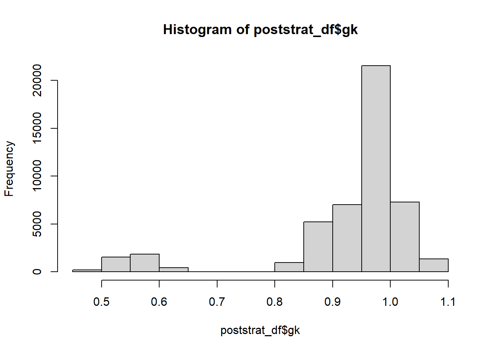
Continuando con la validación se define define la columna pobreza2
poststrat_df %<>%
mutate(pobreza2 = epred_mat *gk,
pobreza2 = ifelse(pobreza2>1, 1, pobreza2),
pobreza2 = ifelse(pobreza2<0, 0, pobreza2)) Paso seguido realizamos el calculo de los totales calibrados.
temp <- map_df(names_cov ,~ poststrat_df %>%
group_by_at(all_of(.x)) %>%
summarise(
Nhat = sum(n),
t_pobreza = sum(n*pobreza2)) %>%
transmute(
Cal_Media = t_pobreza/Nhat,
Variable = paste0(.x, get(.x) )))
data.frame( Categoría = unlist(paso["area",]),
Hat_Media = unlist(paso["medias",])) %>%
cbind(temp) %>% tba()| Categoría | Hat_Media | Cal_Media | Variable | |
|---|---|---|---|---|
| area1 | 0 | 0.5686 | 0.5638 | area0 |
| area2 | 1 | 0.5202 | 0.5191 | area1 |
| edad1 | 2 | 0.1766 | 0.1760 | edad2 |
| edad2 | 3 | 0.5924 | 0.5907 | edad3 |
| edad3 | 4 | 0.6903 | 0.6880 | edad4 |
| edad4 | 5 | 0.5457 | 0.5434 | edad5 |
| etnia1 | 1 | 0.5546 | 0.5512 | etnia1 |
| etnia2 | 2 | 0.5541 | 0.5515 | etnia2 |
| etnia3 | 3 | 0.5149 | 0.5138 | etnia3 |
También es posible hacer validaciones visuales.
library(survey)
library(srvyr)
library(patchwork)
source("0Recursos/0Funciones/funciones_mrp.R")
poststrat_df %<>% mutate(yk_lmer = epred_mat,
yk_bench = pobreza2)
diseno <- encuesta_mrp %>%
mutate(yk_dir = pobreza) %>%
as_survey_design(weights = fexp)
bynames <- c("area", "anoest", "edad", "discapacidad", "etnia")
plot_uni <- map(
.x = setNames(bynames, bynames),
~ plot_compare2(
sample_diseno = diseno,
poststrat = poststrat_df,
by1 = .x
)
)
plot_uni <- (plot_uni$area$Plot$plot1 + plot_uni$anoest$Plot$plot1)/
(plot_uni$edad$Plot$plot1+ plot_uni$discapacidad$Plot$plot1+ plot_uni$etnia$Plot$plot1)
plot_uni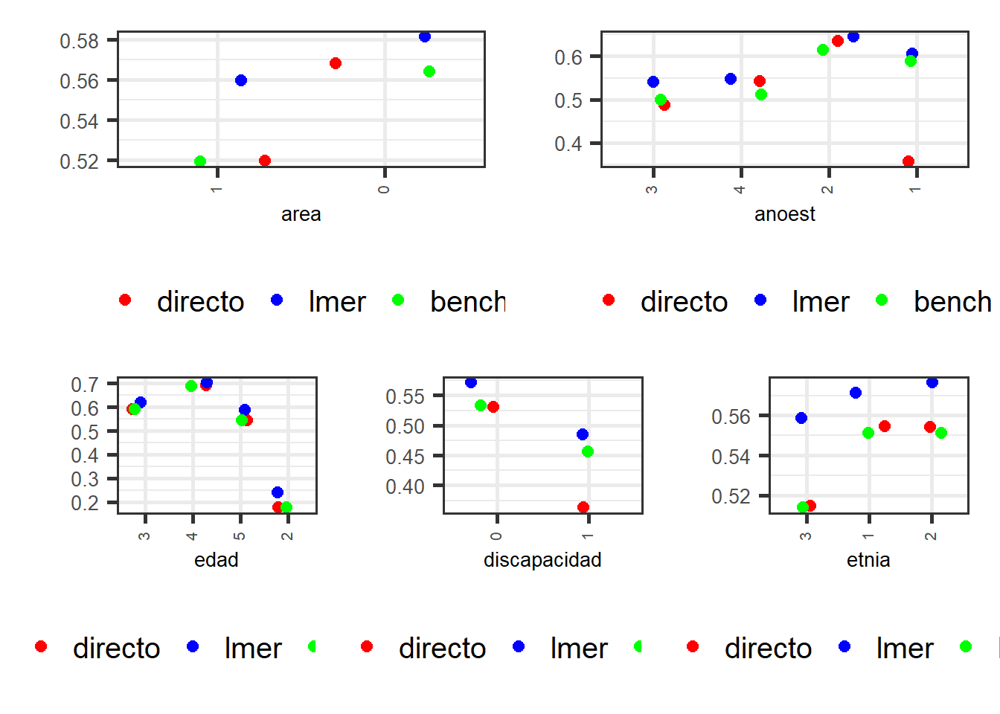
Estimación y mapa del indicador.
Después de todos el proceso de estandarización, creación de variables covariables, estimación del modelo y validaciones realizadas, la estimación puntual se reduce a operaciones algebraicas simples.
poststrat_df2 <- poststrat_df %>% filter(anoest != "99")
bynames <- c("area", "edad",
"etnia", "anoest", "discapacidad")
bynames <- t(combn(bynames, 2))
bynames <- rbind(c("mpio","mpio"),bynames )
dat_df = map(
1:nrow(bynames),
~ poststrat_df2 %>% group_by_at(vars("mpio", bynames[.x, ])) %>%
summarise(
Benchmarking_estimate = sum(n * pobreza2) / sum(n),
.groups = "drop"
)
)En este paso validamos que las estimaciones no superen el valor de 1 o sean menores o iguales a creo.
dat_df %>% map_dbl(~.x %>%
summarise(Validar = sum(Benchmarking_estimate >= 1 |
Benchmarking_estimate < 0 )) %>%
as.numeric(.$Validar)) [1] 0 0 0 0 0 0 0 0 0 0 0Mapas para el indicador D6
library(sp)
library(sf)
library(tmap)
ShapeSAE <- read_sf("../Shape/PROVINCIAS.shp")
ShapeSAE %<>% mutate(mpio = IDPROV,
nombre= PROVINCIA
)
P1_ingresolp <- tm_shape(ShapeSAE %>%
left_join(dat_df[[1]], by = "mpio"))
brks_lp <- c(0, 0.1, 0.2, 0.3, 0.4, 0.5, 0.6, 0.7, 1)
tmap_options(check.and.fix = TRUE)
Mapa_lp <-
P1_ingresolp + tm_polygons(
"Benchmarking_estimate",
breaks = brks_lp,
title = "D6",
palette = "-YlOrRd"
) + tm_layout(asp = 0)
Mapa_lp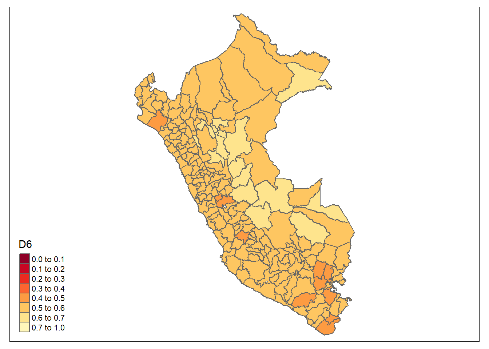
Estimación del indicador D6m (Uso de métodos anticonceptivos)
El procedimiento descrito previamente se repite para los indicadores D6m y NI.
Lectura de insumos
encuesta_mrp <- readRDS("../Data/UNFPA/D6m/encuesta_mrp.rds")
statelevel_predictors_df <- readRDS("../Data/UNFPA/D6m/statelevel_predictors_df.rds")
censo_mrp <- readRDS("../Data/UNFPA/D6m/censo_mrp.rds")
fit <- readRDS("../Data/UNFPA/D6m/fit_mrp_logit.rds")Por el proceso de estandarizado realizado es renombrado el indicador usamoderno como probreza, el modelo conteplado para el indicador es:
fit@callglmer(formula = cbind(pobres, nopobres) ~ (1 | mpio) + (1 | edad) +
(1 | area) + (1 | anoest) + (1 | etnia) + (1 | mpio:area) +
(1 | mpio:etnia) + (1 | mpio:edad) + (1 | mpio:anoest) +
(1 | area:etnia) + (1 | area:edad) + (1 | area:anoest) +
(1 | etnia:edad) + (1 | etnia:anoest) + (1 | edad:anoest) +
(1 | discapacidad) + tasa_desocupacion + stable_lights +
crops.coverfraction + urban.coverfraction + unida, data = encuesta_df_agg,
family = binomial(link = "logit"))El resultado del modelo es el siguiente.
tba(coef(fit)$mpio %>% head(10))| (Intercept) | tasa_desocupacion | stable_lights | crops.coverfraction | urban.coverfraction | unida2 | |
|---|---|---|---|---|---|---|
| 0101 | -1.5979 | 1.8377 | 0 | 0 | 0 | -1.7063 |
| 0102 | -1.7356 | 1.8377 | 0 | 0 | 0 | -1.7063 |
| 0103 | -1.5944 | 1.8377 | 0 | 0 | 0 | -1.7063 |
| 0104 | -2.0987 | 1.8377 | 0 | 0 | 0 | -1.7063 |
| 0105 | -1.4423 | 1.8377 | 0 | 0 | 0 | -1.7063 |
| 0106 | -1.3545 | 1.8377 | 0 | 0 | 0 | -1.7063 |
| 0107 | -1.4991 | 1.8377 | 0 | 0 | 0 | -1.7063 |
| 0201 | -1.5783 | 1.8377 | 0 | 0 | 0 | -1.7063 |
| 0202 | -1.6071 | 1.8377 | 0 | 0 | 0 | -1.7063 |
| 0203 | -1.7144 | 1.8377 | 0 | 0 | 0 | -1.7063 |
Predicción en el censo
byAgrega <- c("mpio", "area", "edad", "etnia",
"anoest", "discapacidad", "unida")
poststrat_df <- censo_mrp %>%
group_by_at(byAgrega) %>%
summarise(n = sum(n), .groups = "drop")
poststrat_df <- left_join(poststrat_df, statelevel_predictors_df,
by = "mpio")
epred_mat <- predict(fit, newdata = poststrat_df,
type = "response", allow.new.levels = TRUE)Validación de las predicciones
sum(is.na(epred_mat))[1] 0sum(epred_mat < 0)[1] 0Asignar la predicción a la base de poststrat_df
poststrat_df$epred_mat <- epred_matBenchmarking
- Validarse los nombres de las covariables disponibles en censo y encuesta, que deben ser las mismas con las que se han venido trabajando, para este caso resultaron
names_cov <- c("area", "edad", "etnia")- Calcular las estimaciones para cada una de las variables de la base de datos de
encuesta_mrputilizando el indicador de interés.
encuesta_mrp %<>% mutate(pobreza = usamoderno)
paso <- sapply(names_cov, function(byi){
encuesta_mrp %>%
group_by_at(all_of(byi)) %>%
summarise(Nhat = sum(fexp),
t_pobreza = sum(pobreza*fexp),
medias = weighted.mean(pobreza,fexp))
})
data.frame( Categoría = unlist(paso["area",]),
Total = unlist(paso["t_pobreza",]),
Hat_Media = unlist(paso["medias",])) %>%
tba()| Categoría | Total | Hat_Media | |
|---|---|---|---|
| area1 | 0 | 487397.7 | 0.3736 |
| area2 | 1 | 2350587.6 | 0.4077 |
| edad1 | 2 | 200022.6 | 0.1517 |
| edad2 | 3 | 982386.9 | 0.4756 |
| edad3 | 4 | 970202.5 | 0.5136 |
| edad4 | 5 | 685373.2 | 0.3813 |
| etnia1 | 1 | 654095.8 | 0.3805 |
| etnia2 | 2 | 347875.2 | 0.4204 |
| etnia3 | 3 | 1836014.2 | 0.4059 |
- Crear variables dummys en
poststrat_dfy multiplicar cada variable por la predicciónepred_mat
poststrat_df %<>%
fastDummies::dummy_cols(select_columns = names_cov,
remove_selected_columns = FALSE)
poststrat_df %<>%
mutate_at(vars(matches("\\d$")) ,~.*poststrat_df$epred_mat)
tba( poststrat_df %>% select(names_cov,matches("\\d$")) %>% head(20))| area | edad | etnia | area_0 | area_1 | edad_2 | edad_3 | edad_4 | edad_5 | etnia_1 | etnia_2 | etnia_3 |
|---|---|---|---|---|---|---|---|---|---|---|---|
| 0 | 2 | 1 | 0.1040 | 0 | 0.1040 | 0 | 0 | 0 | 0.1040 | 0.0000 | 0.0000 |
| 0 | 2 | 1 | 0.4168 | 0 | 0.4168 | 0 | 0 | 0 | 0.4168 | 0.0000 | 0.0000 |
| 0 | 2 | 1 | 0.1148 | 0 | 0.1148 | 0 | 0 | 0 | 0.1148 | 0.0000 | 0.0000 |
| 0 | 2 | 1 | 0.3862 | 0 | 0.3862 | 0 | 0 | 0 | 0.3862 | 0.0000 | 0.0000 |
| 0 | 2 | 1 | 0.1025 | 0 | 0.1025 | 0 | 0 | 0 | 0.1025 | 0.0000 | 0.0000 |
| 0 | 2 | 1 | 0.0881 | 0 | 0.0881 | 0 | 0 | 0 | 0.0881 | 0.0000 | 0.0000 |
| 0 | 2 | 1 | 0.1426 | 0 | 0.1426 | 0 | 0 | 0 | 0.1426 | 0.0000 | 0.0000 |
| 0 | 2 | 2 | 0.4471 | 0 | 0.4471 | 0 | 0 | 0 | 0.0000 | 0.4471 | 0.0000 |
| 0 | 2 | 2 | 0.1280 | 0 | 0.1280 | 0 | 0 | 0 | 0.0000 | 0.1280 | 0.0000 |
| 0 | 2 | 2 | 0.1147 | 0 | 0.1147 | 0 | 0 | 0 | 0.0000 | 0.1147 | 0.0000 |
| 0 | 2 | 2 | 0.1580 | 0 | 0.1580 | 0 | 0 | 0 | 0.0000 | 0.1580 | 0.0000 |
| 0 | 2 | 3 | 0.1199 | 0 | 0.1199 | 0 | 0 | 0 | 0.0000 | 0.0000 | 0.1199 |
| 0 | 2 | 3 | 0.4569 | 0 | 0.4569 | 0 | 0 | 0 | 0.0000 | 0.0000 | 0.4569 |
| 0 | 2 | 3 | 0.1325 | 0 | 0.1325 | 0 | 0 | 0 | 0.0000 | 0.0000 | 0.1325 |
| 0 | 2 | 3 | 0.4156 | 0 | 0.4156 | 0 | 0 | 0 | 0.0000 | 0.0000 | 0.4156 |
| 0 | 2 | 3 | 0.1143 | 0 | 0.1143 | 0 | 0 | 0 | 0.0000 | 0.0000 | 0.1143 |
| 0 | 2 | 3 | 0.4251 | 0 | 0.4251 | 0 | 0 | 0 | 0.0000 | 0.0000 | 0.4251 |
| 0 | 2 | 3 | 0.1183 | 0 | 0.1183 | 0 | 0 | 0 | 0.0000 | 0.0000 | 0.1183 |
| 0 | 2 | 3 | 0.3846 | 0 | 0.3846 | 0 | 0 | 0 | 0.0000 | 0.0000 | 0.3846 |
| 0 | 2 | 3 | 0.1019 | 0 | 0.1019 | 0 | 0 | 0 | 0.0000 | 0.0000 | 0.1019 |
- Con la función
calibse procede a calcular los \(g_k\), verificando que el proceso se haya realizado con éxito y exista convergencia
library(sampling)
poststrat_df$gk <- calib(
Xs = poststrat_df %>% select(matches("\\d$")), ## Variable dummys
d = poststrat_df$n, ## Conteos en el post-estrato
total = unlist(paso["t_pobreza",]), ## Valores objetivo
method="logit") ## Método empleado
checkcalibration(Xs = poststrat_df %>%
select(matches("\\d$")),
d = poststrat_df$n,
total = unlist(paso["t_pobreza",]),
g = poststrat_df$gk)$message
[1] "the calibration is done"
$result
[1] TRUE
$value
[1] 1e-06- Realizar validación sobre los resultados obtenidos.
hist(poststrat_df$gk)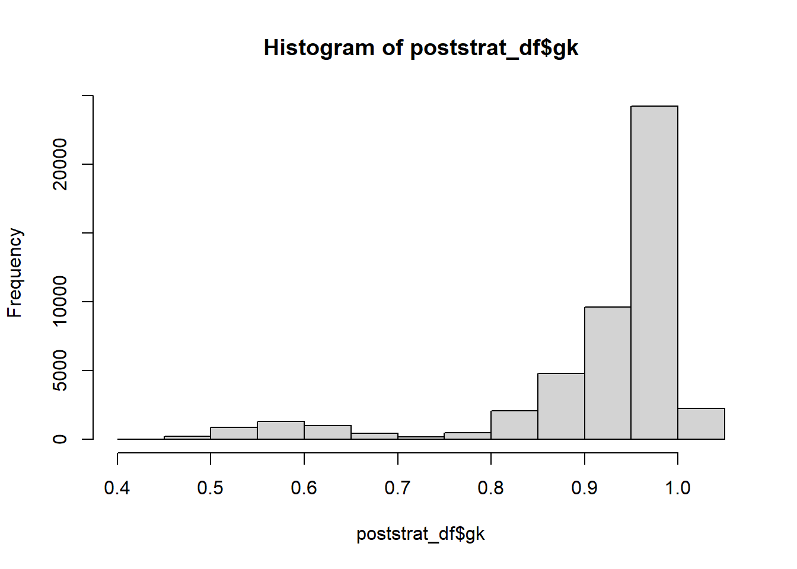
Continuando con la validación se define define la columna pobreza2
poststrat_df %<>%
mutate(pobreza2 = epred_mat *gk,
pobreza2 = ifelse(pobreza2>1, 1, pobreza2),
pobreza2 = ifelse(pobreza2<0, 0, pobreza2)) Paso seguido realizamos el calculo de los totales calibrados.
temp <- map_df(names_cov ,~ poststrat_df %>%
group_by_at(all_of(.x)) %>%
summarise(
Nhat = sum(n),
t_pobreza = sum(n*pobreza2)) %>%
transmute(
Cal_Media = t_pobreza/Nhat,
Variable = paste0(.x, get(.x) )))
data.frame( Categoría = unlist(paso["area",]),
Hat_Media = unlist(paso["medias",])) %>%
cbind(temp) %>% tba()| Categoría | Hat_Media | Cal_Media | Variable | |
|---|---|---|---|---|
| area1 | 0 | 0.3736 | 0.3705 | area0 |
| area2 | 1 | 0.4077 | 0.4068 | area1 |
| edad1 | 2 | 0.1517 | 0.1512 | edad2 |
| edad2 | 3 | 0.4756 | 0.4743 | edad3 |
| edad3 | 4 | 0.5136 | 0.5119 | edad4 |
| edad4 | 5 | 0.3813 | 0.3797 | edad5 |
| etnia1 | 1 | 0.3805 | 0.3781 | etnia1 |
| etnia2 | 2 | 0.4204 | 0.4184 | etnia2 |
| etnia3 | 3 | 0.4059 | 0.4050 | etnia3 |
También es posible hacer validaciones visuales.
library(survey)
library(srvyr)
library(patchwork)
source("0Recursos/0Funciones/funciones_mrp.R")
poststrat_df %<>% mutate(yk_lmer = epred_mat,
yk_bench = pobreza2)
diseno <- encuesta_mrp %>%
mutate(yk_dir = pobreza) %>%
as_survey_design(weights = fexp)
bynames <- c("area", "anoest", "edad", "discapacidad", "etnia")
plot_uni <- map(
.x = setNames(bynames, bynames),
~ plot_compare2(
sample_diseno = diseno,
poststrat = poststrat_df,
by1 = .x
)
)
plot_uni <- (plot_uni$area$Plot$plot1 + plot_uni$anoest$Plot$plot1)/
(plot_uni$edad$Plot$plot1+ plot_uni$discapacidad$Plot$plot1+ plot_uni$etnia$Plot$plot1)
plot_uni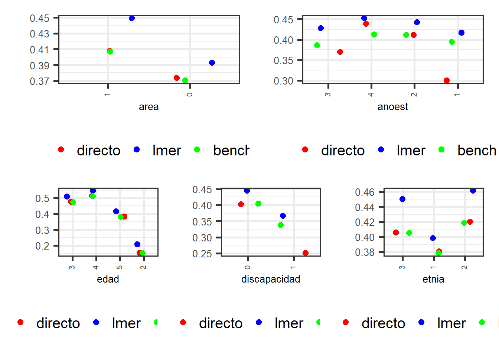
Estimación y mapa del indicador D6m.
Después de todos el proceso de estandarización, creación de variables covariables, estimación del modelo y validaciones realizadas, la estimación puntual se reduce a operaciones algebraicas simples.
poststrat_df2 <- poststrat_df %>% filter(anoest != "99")
dat_mpio <- poststrat_df2 %>% group_by(mpio) %>%
summarise(
Benchmarking_estimate = sum(n * pobreza2) / sum(n),
.groups = "drop"
)En este paso validamos que las estimaciones no superen el valor de 1 o sean menores o iguales a creo.
dat_mpio %>% summarise(Validar = sum(Benchmarking_estimate >= 1 |
Benchmarking_estimate < 0 ))| Validar |
|---|
| 0 |
Mapas para el indicador D6m
library(sp)
library(sf)
library(tmap)
ShapeSAE <- read_sf("../Shape/PROVINCIAS.shp")
ShapeSAE %<>% mutate(mpio = IDPROV,
nombre= PROVINCIA
)
P1_ingresolp <- tm_shape(ShapeSAE %>%
left_join(dat_mpio, by = "mpio"))
brks_lp <- c(0, 0.1, 0.2, 0.3, 0.4, 0.5, 0.6, 0.7, 1)
tmap_options(check.and.fix = TRUE)
Mapa_lp <-
P1_ingresolp + tm_polygons(
"Benchmarking_estimate",
breaks = brks_lp,
title = "D6m",
palette = "-YlOrRd"
) + tm_layout(asp = 0)
Mapa_lp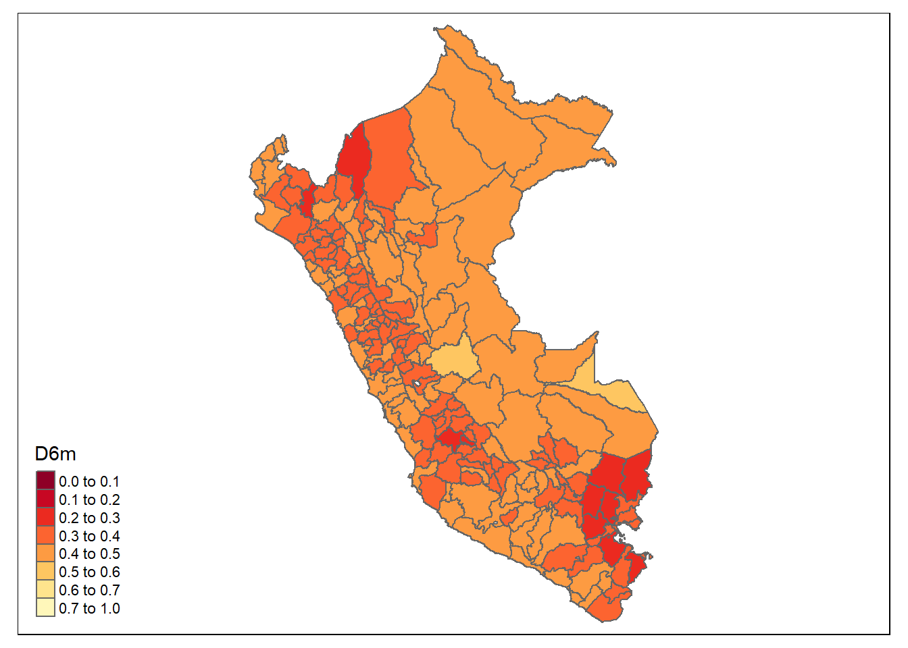
Estimación del indicador NI (Necesidades Insatisfechas)
Lectura de insumos
encuesta_mrp <- readRDS("../Data/UNFPA/NI/encuesta_mrp.rds")
statelevel_predictors_df <- readRDS("../Data/UNFPA/NI/statelevel_predictors_df.rds")
censo_mrp <- readRDS("../Data/UNFPA/NI/censo_mrp.rds")
fit <- readRDS("../Data/UNFPA/NI/fit_mrp_logit.rds")Por el proceso de estandarizado realizado es renombrado el indicador necesInst como probreza, el modelo conteplado para el indicador es:
fit@callglmer(formula = cbind(pobres, nopobres) ~ (1 | mpio) + (1 | edad) +
(1 | area) + (1 | anoest) + (1 | etnia) + (1 | mpio:area) +
(1 | mpio:etnia) + (1 | mpio:edad) + (1 | mpio:anoest) +
(1 | area:edad) + (1 | etnia:edad) + (1 | etnia:anoest) +
(1 | edad:anoest) + (1 | discapacidad) + tasa_desocupacion +
stable_lights + crops.coverfraction + urban.coverfraction,
data = encuesta_df_agg, family = binomial(link = "logit"))El resultado del modelo es el siguiente.
tba(coef(fit)$mpio %>% head(10))| (Intercept) | tasa_desocupacion | stable_lights | crops.coverfraction | urban.coverfraction | |
|---|---|---|---|---|---|
| 0101 | -1.1370 | -2.5742 | 0 | 0 | 0 |
| 0102 | -0.6228 | -2.5742 | 0 | 0 | 0 |
| 0103 | -0.9597 | -2.5742 | 0 | 0 | 0 |
| 0104 | -0.7229 | -2.5742 | 0 | 0 | 0 |
| 0105 | -0.8627 | -2.5742 | 0 | 0 | 0 |
| 0106 | -1.0516 | -2.5742 | 0 | 0 | 0 |
| 0107 | -0.8951 | -2.5742 | 0 | 0 | 0 |
| 0201 | -0.9095 | -2.5742 | 0 | 0 | 0 |
| 0202 | -0.9693 | -2.5742 | 0 | 0 | 0 |
| 0203 | -0.5424 | -2.5742 | 0 | 0 | 0 |
Predicción en el censo
byAgrega <- c("mpio", "area", "edad", "etnia",
"anoest", "discapacidad", "unida")
poststrat_df <- censo_mrp %>%
group_by_at(byAgrega) %>%
summarise(n = sum(n), .groups = "drop")
poststrat_df <- left_join(poststrat_df, statelevel_predictors_df,
by = "mpio")
epred_mat <- predict(fit, newdata = poststrat_df,
type = "response", allow.new.levels = TRUE)Validación de las predicciones
sum(is.na(epred_mat))[1] 0sum(epred_mat < 0)[1] 0Asignar la predicción a la base de poststrat_df
poststrat_df$epred_mat <- epred_matBenchmarking
- Validarse los nombres de las covariables disponibles en censo y encuesta, que deben ser las mismas con las que se han venido trabajando, para este caso resultaron
names_cov <- c("area", "edad", "etnia")- Calcular las estimaciones para cada una de las variables de la base de datos de
encuesta_mrputilizando el indicador de interés.
encuesta_mrp %<>% mutate(pobreza = necesInst)
paso <- sapply(names_cov, function(byi){
encuesta_mrp %>%
group_by_at(all_of(byi)) %>%
summarise(Nhat = sum(fexp),
t_pobreza = sum(pobreza*fexp),
medias = weighted.mean(pobreza,fexp))
})
data.frame( Categoría = unlist(paso["area",]),
Total = unlist(paso["t_pobreza",]),
Hat_Media = unlist(paso["medias",])) %>%
tba()| Categoría | Total | Hat_Media | |
|---|---|---|---|
| area1 | 0 | 48912.268 | 0.0375 |
| area2 | 1 | 158571.357 | 0.0275 |
| edad1 | 2 | 9922.903 | 0.0075 |
| edad2 | 3 | 58907.882 | 0.0285 |
| edad3 | 4 | 72982.138 | 0.0386 |
| edad4 | 5 | 65670.702 | 0.0365 |
| etnia1 | 1 | 51391.370 | 0.0299 |
| etnia2 | 2 | 23102.623 | 0.0279 |
| etnia3 | 3 | 132989.632 | 0.0294 |
- Crear variables dummys en
poststrat_dfy multiplicar cada variable por la predicciónepred_mat
poststrat_df %<>%
fastDummies::dummy_cols(select_columns = names_cov,
remove_selected_columns = FALSE)
poststrat_df %<>%
mutate_at(vars(matches("\\d$")) ,~.*poststrat_df$epred_mat)
tba( poststrat_df %>% select(names_cov,matches("\\d$")) %>% head(20))| area | edad | etnia | area_0 | area_1 | edad_2 | edad_3 | edad_4 | edad_5 | etnia_1 | etnia_2 | etnia_3 |
|---|---|---|---|---|---|---|---|---|---|---|---|
| 0 | 2 | 1 | 0.0121 | 0 | 0.0121 | 0 | 0 | 0 | 0.0121 | 0.0000 | 0.0000 |
| 0 | 2 | 1 | 0.0151 | 0 | 0.0151 | 0 | 0 | 0 | 0.0151 | 0.0000 | 0.0000 |
| 0 | 2 | 1 | 0.0151 | 0 | 0.0151 | 0 | 0 | 0 | 0.0151 | 0.0000 | 0.0000 |
| 0 | 2 | 1 | 0.0132 | 0 | 0.0132 | 0 | 0 | 0 | 0.0132 | 0.0000 | 0.0000 |
| 0 | 2 | 1 | 0.0132 | 0 | 0.0132 | 0 | 0 | 0 | 0.0132 | 0.0000 | 0.0000 |
| 0 | 2 | 1 | 0.0132 | 0 | 0.0132 | 0 | 0 | 0 | 0.0132 | 0.0000 | 0.0000 |
| 0 | 2 | 1 | 0.0101 | 0 | 0.0101 | 0 | 0 | 0 | 0.0101 | 0.0000 | 0.0000 |
| 0 | 2 | 2 | 0.0151 | 0 | 0.0151 | 0 | 0 | 0 | 0.0000 | 0.0151 | 0.0000 |
| 0 | 2 | 2 | 0.0151 | 0 | 0.0151 | 0 | 0 | 0 | 0.0000 | 0.0151 | 0.0000 |
| 0 | 2 | 2 | 0.0132 | 0 | 0.0132 | 0 | 0 | 0 | 0.0000 | 0.0132 | 0.0000 |
| 0 | 2 | 2 | 0.0101 | 0 | 0.0101 | 0 | 0 | 0 | 0.0000 | 0.0101 | 0.0000 |
| 0 | 2 | 3 | 0.0121 | 0 | 0.0121 | 0 | 0 | 0 | 0.0000 | 0.0000 | 0.0121 |
| 0 | 2 | 3 | 0.0151 | 0 | 0.0151 | 0 | 0 | 0 | 0.0000 | 0.0000 | 0.0151 |
| 0 | 2 | 3 | 0.0151 | 0 | 0.0151 | 0 | 0 | 0 | 0.0000 | 0.0000 | 0.0151 |
| 0 | 2 | 3 | 0.0151 | 0 | 0.0151 | 0 | 0 | 0 | 0.0000 | 0.0000 | 0.0151 |
| 0 | 2 | 3 | 0.0151 | 0 | 0.0151 | 0 | 0 | 0 | 0.0000 | 0.0000 | 0.0151 |
| 0 | 2 | 3 | 0.0132 | 0 | 0.0132 | 0 | 0 | 0 | 0.0000 | 0.0000 | 0.0132 |
| 0 | 2 | 3 | 0.0132 | 0 | 0.0132 | 0 | 0 | 0 | 0.0000 | 0.0000 | 0.0132 |
| 0 | 2 | 3 | 0.0132 | 0 | 0.0132 | 0 | 0 | 0 | 0.0000 | 0.0000 | 0.0132 |
| 0 | 2 | 3 | 0.0132 | 0 | 0.0132 | 0 | 0 | 0 | 0.0000 | 0.0000 | 0.0132 |
- Con la función
calibse procede a calcular los \(g_k\), verificando que el proceso se haya realizado con éxito y exista convergencia
library(sampling)
poststrat_df$gk <- calib(
Xs = poststrat_df %>% select(matches("\\d$")), ## Variable dummys
d = poststrat_df$n, ## Conteos en el post-estrato
total = unlist(paso["t_pobreza",]), ## Valores objetivo
method="logit") ## Método empleado
checkcalibration(Xs = poststrat_df %>%
select(matches("\\d$")),
d = poststrat_df$n,
total = unlist(paso["t_pobreza",]),
g = poststrat_df$gk)$message
[1] "the calibration is done"
$result
[1] TRUE
$value
[1] 1e-06- Realizar validación sobre los resultados obtenidos.
hist(poststrat_df$gk)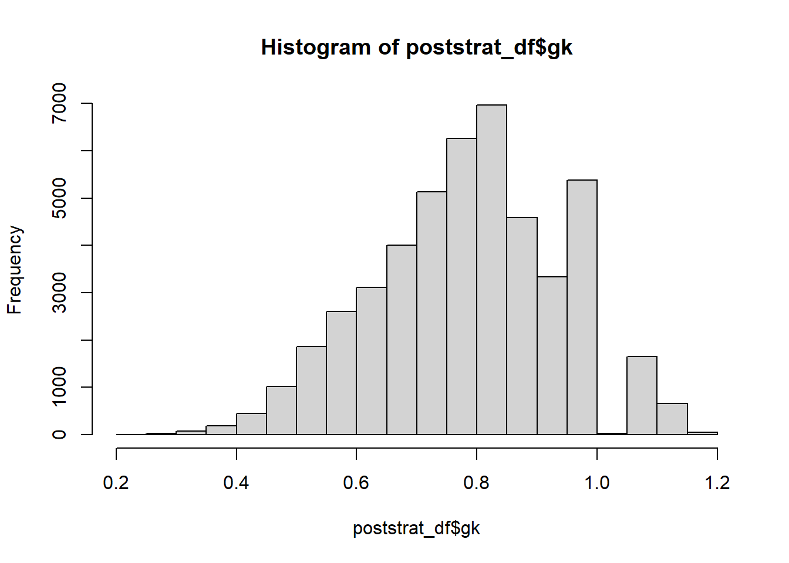
Continuando con la validación se define define la columna pobreza2
poststrat_df %<>%
mutate(pobreza2 = epred_mat *gk,
pobreza2 = ifelse(pobreza2>1, 1, pobreza2),
pobreza2 = ifelse(pobreza2<0, 0, pobreza2)) Paso seguido realizamos el calculo de los totales calibrados.
temp <- map_df(names_cov ,~ poststrat_df %>%
group_by_at(all_of(.x)) %>%
summarise(
Nhat = sum(n),
t_pobreza = sum(n*pobreza2)) %>%
transmute(
Cal_Media = t_pobreza/Nhat,
Variable = paste0(.x, get(.x) )))
data.frame( Categoría = unlist(paso["area",]),
Hat_Media = unlist(paso["medias",])) %>%
cbind(temp) %>% tba()| Categoría | Hat_Media | Cal_Media | Variable | |
|---|---|---|---|---|
| area1 | 0 | 0.0375 | 0.0372 | area0 |
| area2 | 1 | 0.0275 | 0.0274 | area1 |
| edad1 | 2 | 0.0075 | 0.0075 | edad2 |
| edad2 | 3 | 0.0285 | 0.0284 | edad3 |
| edad3 | 4 | 0.0386 | 0.0385 | edad4 |
| edad4 | 5 | 0.0365 | 0.0364 | edad5 |
| etnia1 | 1 | 0.0299 | 0.0297 | etnia1 |
| etnia2 | 2 | 0.0279 | 0.0278 | etnia2 |
| etnia3 | 3 | 0.0294 | 0.0293 | etnia3 |
También es posible hacer validaciones visuales.
library(survey)
library(srvyr)
library(patchwork)
source("0Recursos/0Funciones/funciones_mrp.R")
poststrat_df %<>% mutate(yk_lmer = epred_mat,
yk_bench = pobreza2)
diseno <- encuesta_mrp %>%
mutate(yk_dir = pobreza) %>%
as_survey_design(weights = fexp)
bynames <- c("area", "anoest", "edad", "discapacidad", "etnia")
plot_uni <- map(
.x = setNames(bynames, bynames),
~ plot_compare2(
sample_diseno = diseno,
poststrat = poststrat_df,
by1 = .x
)
)
plot_uni <- (plot_uni$area$Plot$plot1 + plot_uni$anoest$Plot$plot1)/
(plot_uni$edad$Plot$plot1+ plot_uni$discapacidad$Plot$plot1+ plot_uni$etnia$Plot$plot1)
plot_uni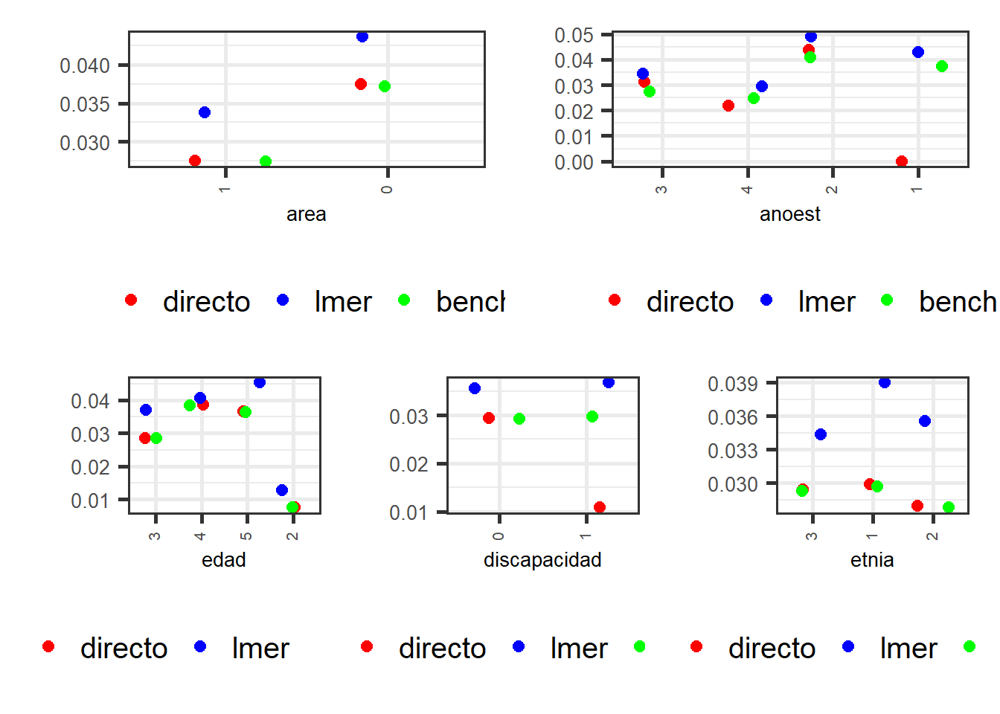
Estimación y mapa del indicador.
Después de todos el proceso de estandarización, creación de variables covariables, estimación del modelo y validaciones realizadas, la estimación puntual se reduce a operaciones algebraicas simples.
poststrat_df2 <- poststrat_df %>% filter(anoest != "99")
dat_mpio <- poststrat_df2 %>% group_by(mpio) %>%
summarise(
Benchmarking_estimate = sum(n * pobreza2) / sum(n),
.groups = "drop"
)En este paso validamos que las estimaciones no superen el valor de 1 o sean menores o iguales a creo.
dat_mpio %>% summarise(Validar = sum(Benchmarking_estimate >= 1 |
Benchmarking_estimate < 0 ))| Validar |
|---|
| 0 |
Mapas para el indicador NI
library(sp)
library(sf)
library(tmap)
ShapeSAE <- read_sf("../Shape/PROVINCIAS.shp")
ShapeSAE %<>% mutate(mpio = IDPROV,
nombre= PROVINCIA
)
P1_ingresolp <- tm_shape(ShapeSAE %>%
left_join(dat_mpio, by = "mpio"))
brks_lp <- c(0, 0.01, 0.02, 0.03, 0.04, 0.05, 0.06, 1)
tmap_options(check.and.fix = TRUE)
Mapa_lp <-
P1_ingresolp + tm_polygons(
"Benchmarking_estimate",
breaks = brks_lp,
title = "NI",
palette = "YlOrRd"
) + tm_layout(asp = 0)
Mapa_lp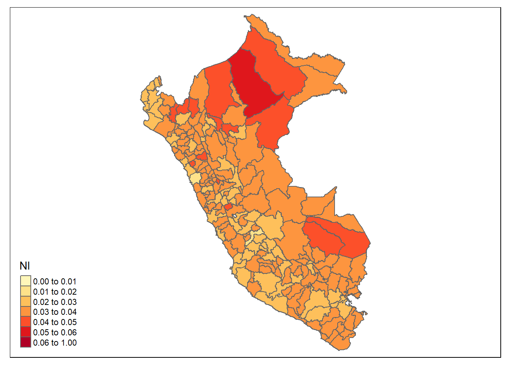
Estimación del indicador D7
Este indicador, hace referencia a la proporción de mujeres en edad de procrear (15 a 49 años), sexualmente activas y/o unidas que han decidido por voluntad propia no tener hijos (adicionales) o posponer su siguiente hijo y para ello se encuentran utilizando métodos anticonceptivos modernos.
Lectura de insumos
encuesta_mrp <- readRDS("../Data/UNFPA/NI/encuesta_mrp.rds")
censo_mrp <- readRDS("../Data/UNFPA/NI/censo_mrp.rds")
statelevel_predictors_df <- readRDS("../Data/UNFPA/NI/statelevel_predictors_df.rds")
fit_mrp_logit_D6 <- readRDS("../Data/UNFPA/D6/fit_mrp_logit.rds")
fit_mrp_logit_D6m <- readRDS("../Data/UNFPA/D6m/fit_mrp_logit.rds")
fit_mrp_logit_NI <- readRDS("../Data/UNFPA/NI/fit_mrp_logit.rds")Predicción en el censo
byAgrega <- c("mpio", "area", "edad", "etnia",
"anoest", "discapacidad", "unida")
poststrat_df <- censo_mrp %>%
group_by_at(byAgrega) %>%
summarise(n = sum(n), .groups = "drop")
poststrat_df <- left_join(poststrat_df, statelevel_predictors_df,
by = "mpio")Ahora debemos hacer la predicción sobre la base poststrat_df con los tres modelos
### Creando epredmat Para D6
epred_mat_D6 <- predict(fit_mrp_logit_D6, newdata = poststrat_df,
type = "response", allow.new.levels = TRUE)
### Creando epredmat Para D6m
epred_mat_D6m <- predict(fit_mrp_logit_D6m, newdata = poststrat_df,
type = "response", allow.new.levels = TRUE)
### Creando epredmat Para NI
epred_mat_NI <- predict(fit_mrp_logit_NI, newdata = poststrat_df,
type = "response", allow.new.levels = TRUE)El indicador D7 se construye a partir de las predicciones
epred_mat_D7<- (epred_mat_D6m/(epred_mat_D6 + epred_mat_NI))Asignar la predicción a la base de poststrat_df
poststrat_df$epred_mat <- epred_mat_D7Estimación y mapa del indicador.
Después de todos el proceso de estandarización, creación de variables covariables, estimación del modelo y validaciones realizadas, la estimación puntual se reduce a operaciones algebraicas simples.
poststrat_df2 <- poststrat_df %>% filter(anoest != "99")
dat_mpio <- poststrat_df2 %>% group_by(mpio) %>%
summarise(
Benchmarking_estimate = sum(n * epred_mat) / sum(n),
.groups = "drop"
)En este paso validamos que las estimaciones no superen el valor de 1 o sean menores o iguales a creo.
dat_mpio %>% summarise(Validar = sum(Benchmarking_estimate >= 1 |
Benchmarking_estimate < 0 ))| Validar |
|---|
| 0 |
Mapas para el indicador D7
library(sp)
library(sf)
library(tmap)
ShapeSAE <- read_sf("../Shape/PROVINCIAS.shp")
ShapeSAE %<>% mutate(mpio = IDPROV,
nombre= PROVINCIA
)
P1_ingresolp <- tm_shape(ShapeSAE %>%
left_join(dat_mpio, by = "mpio"))
brks_lp <- c(0, 0.20, 0.4, 0.6, 0.8 , 1)
tmap_options(check.and.fix = TRUE)
Mapa_lp <-
P1_ingresolp + tm_polygons(
"Benchmarking_estimate",
breaks = brks_lp,
title = "D7",
palette = "-YlOrRd"
) + tm_layout(asp = 0)
Mapa_lp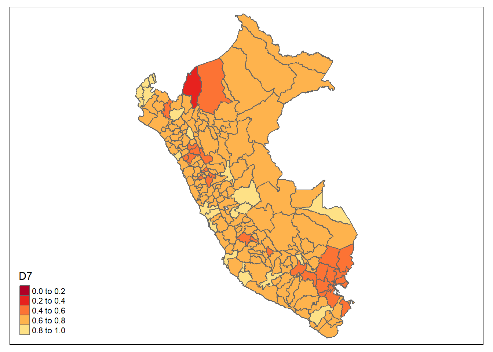